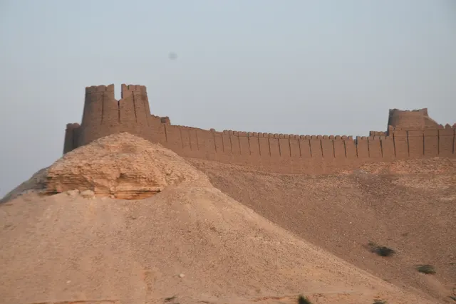

Fortification · Khairpur
Kot Diji Fort
UNESCO Tentative List · Not inscribed on the World Heritage List
Khairpur · Sindh
A hilltop fort above Kot Diji preserves monumental gateways and bastions associated with Sindh's historic defensive landscape.

Place & context
A closer look
- Heritage category
- Fortification
- Designation
- UNESCO Tentative List · Not inscribed on the World Heritage List
- Province / Region
- Sindh
- District
- Khairpur
- Legal status
- Protected by The Antiquity Act 1975 (As amended in 1992)
As recorded in the cited DOAM catalogue; not an independent review of current legislation.